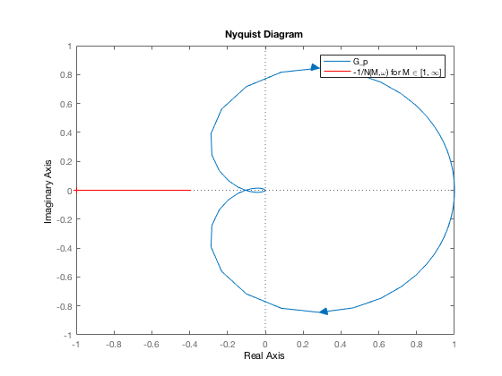

Assignment 4, q1, part 1 - Alexander Hiller (11850637)
Contents
Setup
clear all
close all
clc
syms M;
syms w;
A = 2;
N = 4*A/(pi*M);
Gp_sym = 0.233/( ((w*i)^2 + 0.676*w*i + 0.233 )*(1 + 0.4*w*i) );
Set up tf version of plant for Nyquist plot
a3 = 0.4;
a2 = 0.676*0.4+1;
a1 = 0.233*(0.4)+0.676;
a0 = 0.233;
Gp_K = 0.233;
Gp_tf = tf([Gp_K],[a3,a2,a1,a0]);
Solve Characteristic Equation
CE = 1+N*Gp_sym;
[M, w] = solve( [ real(CE) == 0, imag(CE) == 0 ], [M, w] );
M
w
Warning: Cannot solve symbolically. Returning a numeric approximation instead.
M =
0.26847747157375318815054850735823
w =
-1.3867227552759058983364976711813
Prepare values to plot Real( -1/(N(M,w) )
clear M;
M = linspace(1, 100);
N_plot = 4*A./(pi*M);
figure(1);
nyquist(Gp_tf)
hold on;
plot(-1./(N_plot), zeros(1,100), 'r')
axis([-1, 1,-1,1])
legend('G_p','-1/N(M,\omega) for M \in [1, \infty]')
